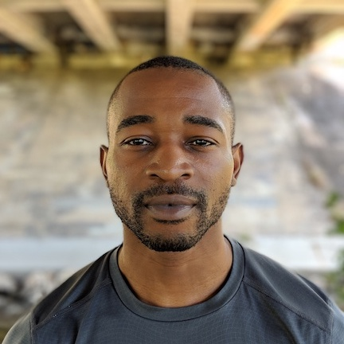

BACK TO MAIN PAGE
NEW DIRECTIONS
I need to adapt myself to a possible new reality. I've always felt uneasy doing online training because of how much soft tissue work and skill intensive work I do in personal training an individual. But I have no choice it seems.
Contact
Healthy Q's- for purely virtual training
Goals
Build muscle?
Gain strength ?
Get Leaner?
What is your gender
Male/female
Age
20's
30's
40's
50's
60's
Where will you primarily be working out
Home
Gym
What type of equipment do you have access to?
Barbells
Dumbells
Gym machines
Resistance bands
Kettlebells
If you don't have any that's ok Strength Lab can design programs based soley on bodyweight just select none of the above
*Info page * I create change through structured habits & proven methodology not fad workouts or cookie cutter training plans.
Based on your current lifestyle
The strategy to achieve your goals will change. Which best describes you?
My diet and activity need alot of work
I have some healthy habits
I mostly eat well and stay active
What is your main reason for wanting to change? *why is arguably more important than what
Improve physical appearance
Increase self confidence
Become healthier
Feel better day to day
Other
* Info page* Sticking to a training program can be hard but through guidance and support success is easy.
Do you have any significant back issues?
Are you at risk for the following?
Testosterone deficiency
Heart disease or stroke
High blood pressure
Diabetes
Osteoarthritis
Other
Did you play sports, lift weights, or follow any other structured physical activity growing up?
Yes
No
Do you currently do any type of strength training?
Enter your email to see how strengthlab can help (based on their original goal)
Then I'll use the demographic info to say how much I've helped that particular group achieve success and outline a general plan. If the individual wants to move fwd then I present pricing and specifics.
This is just my rough outline in my head. You tell me if it's feasible.
King